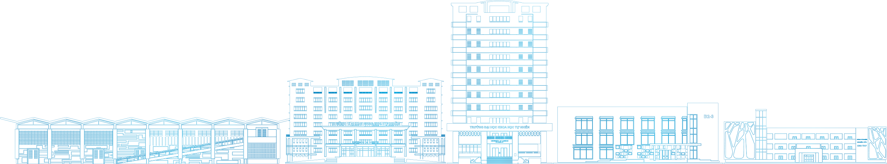

Seminar khoa học
Khoa học dữ liệu và Ứng dụng
Từ nền tảng dữ liệu đến các bài toán thực tiễn trong đào tạo và nghiên cứu
TS. Nguyễn Minh An26/10/2026Hội trường B
01 · Bìa (title). logo-title.png căn giữa cao (780px, top 115px) · skyline-light + wave-orange + corner-tall · văn bản căn giữa theo nhịp tiêu đề.
Phần 01
01
Nền tảng của khoa học dữ liệu
Dữ liệu, mô hình và quy trình — ba lớp xây dựng nên một hệ thống phân tích đáng tin cậy.
02 · Slide phần (section divider). blueNumberBox 01 + tiêu đề phần · skyline-deep làm nền sâu (chỉ dùng một nền skyline mỗi slide).
01 / Nền tảng
Ba khái niệm cốt lõi
1
Dữ liệu có chất lượng
Dữ liệu sạch, có ngữ cảnh và được thu thập đúng mục đích là điều kiện tiên quyết của mọi phân tích.
2
Mô hình phù hợp bài toán
Mô hình tốt không phải mô hình phức tạp nhất, mà là mô hình giải đáp đúng câu hỏi nghiên cứu.
3
Quy trình có thể lặp lại
Kết quả chỉ đáng tin khi toàn bộ quy trình thu thập — xử lý — đánh giá có thể tái lập.
03 · Nội dung dạng danh sách. h0 "01 / Nền tảng" tại x≈158px, y≈78px · tiêu đề ngay bên dưới, cùng lề · ba ý phân cách bằng đường xanh nhạt.
01 / Nền tảng
Ba trụ cột của hệ thống phân tích
A
Thu thập
Xác định nguồn dữ liệu, thiết kế biểu mẫu và chuẩn hóa cách ghi nhận ngay từ đầu.
B
Phân tích
Khám phá dữ liệu, kiểm định giả thuyết và chọn mô hình thích hợp với từng bài toán.
C
Ứng dụng
Chuyển kết quả phân tích thành quyết định cụ thể trong giảng dạy và quản lý đào tạo.
04 · Nội dung ba thẻ (contentCard). Thẻ trắng viền xanh rgba(45,76,154,.18), bo góc 20px, tiêu đề thẻ 36px / thân 27px · một nền skyline-light phía sau sóng.
01 / Kết quả
Kết quả thực nghiệm năm 2026
94,2%
Độ chính xác
Bộ dữ liệu kiểm thử độc lập
3,5 triệu
Bản ghi dữ liệu
Thu thập trong 18 tháng
12
Bài báo khoa học
Đã công bố từ đề tài
04
Nhóm nghiên cứu
Liên kết giữa các khoa
05 · Trang số liệu (data). wave-blue thay cho wave-orange theo quy tắc slide dữ liệu · nội dung nâng lên tránh đè sóng cao hơn · số liệu là dữ liệu minh họa.
Phần 02
02
Ứng dụng và kế hoạch
Đưa kết quả nghiên cứu vào bài toán thực tiễn và định hình hướng đi của giai đoạn tiếp theo.
06 · Slide phần 02. Cùng nhịp với slide 02 — numbox + tiêu đề + mô tả một dòng.
02 / Ứng dụng
So sánh hai phương pháp tiếp cận
A
Mô hình thống kê truyền thống
- Dễ giải thích, phù hợp báo cáo học thuật
- Yêu cầu giả định rõ ràng về dữ liệu
- Hiệu quả khi dữ liệu có cấu trúc đơn giản
B
Học máy hiện đại
- Mạnh với dữ liệu lớn, nhiều đặc trưng
- Cần hạ tầng tính toán và giám sát tốt
- Phù hợp bài toán dự báo theo thời gian thực
07 · So sánh hai cột. Hai contentCard cân bằng, mỗi thẻ một phương án với gạch đầu dòng ngắn.
02 / Kế hoạch
Lộ trình nghiên cứu 2026–2027
01
T10–T12 / 2026
Chuẩn bị dữ liệu
Chuẩn hóa kho dữ liệu và xây dựng quy trình làm sạch.
02
T1–T3 / 2027
Mô hình hóa
Thử nghiệm các mô hình cơ sở và tinh chỉnh tham số.
03
T4–T6 / 2027
Thử nghiệm rộng
Triển khai thí điểm trong hai khoa và thu thập phản hồi.
04
T7–T9 / 2027
Tổng kết
Đánh giá kết quả và công bố báo cáo nghiên cứu.
08 · Timeline. Bốn giai đoạn, mỗi giai đoạn một blueNumberBox, mốc thời gian dùng orangeBadge, nút chấm cam trên đường kẻ chia.
02 / Triển vọng
Bốn hướng phát triển tiếp theo
01
Mở rộng nguồn dữ liệu
Kết nối thêm dữ liệu đào tạo và nghiên cứu giữa các đơn vị.
02
Hệ thống trực quan hóa
Xây dựng bảng điều khiển theo dõi chỉ số theo thời gian thực.
03
Đào tạo nhân lực
Mở chuyên đề bồi dưỡng kỹ năng dữ liệu cho sinh viên và nghiên cứu sinh.
04
Hợp tác liên ngành
Phối hợp cùng các khoa khác để giải quyết bài toán liên ngành.
09 · Lưới thẻ 2×2. Bố cục dày nhất của bộ mẫu — kiểm tra khoảng thở giữa các thẻ và vùng đệm dưới.
Dữ liệu chất lượng là nền tảng của mọi quyết định đúng đắn.
Thông điệp của chuyên đề
10 · Thông điệp (statement). Một câu chốt, căn giữa, thanh cam ngắn phía trên làm điểm nhấn duy nhất.
Cảm ơn quý thầy cô và các bạn
Kính mời đặt câu hỏi và trao đổi sau buổi seminar
Seminar Khoa học dữ liệu và Ứng dụng26/10/2026
11 · Kết thúc (closing). logo-small.png căn giữa cao (150px, top 120px) · lời cảm ơn căn giữa theo nhịp tiêu đề.